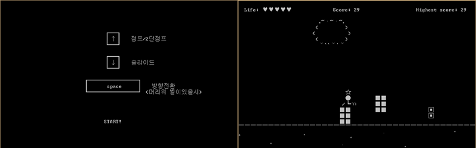
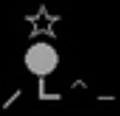
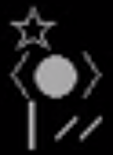
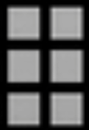
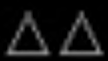
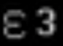
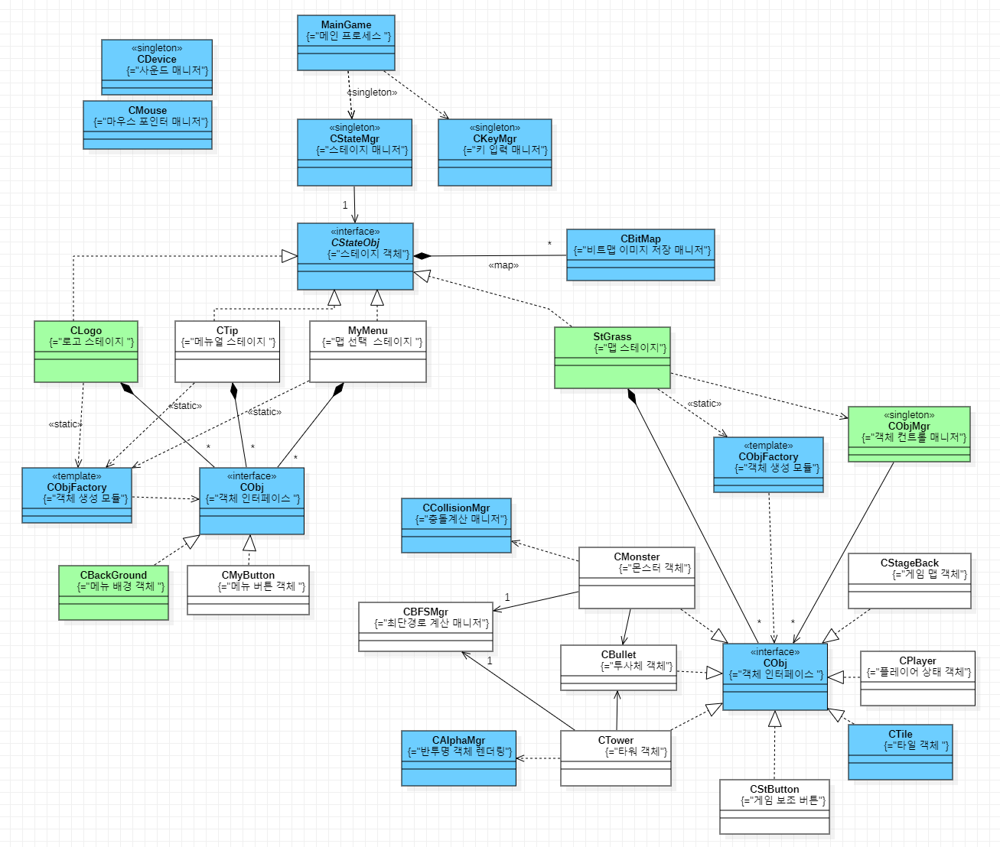
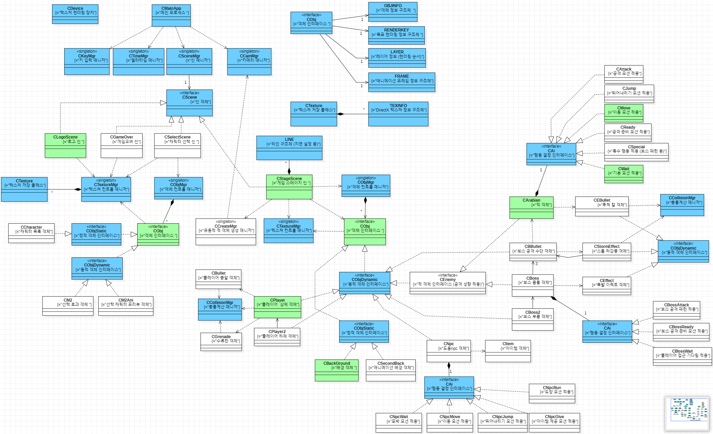

C++ / WinAPI / DirectX
게임 포트폴리오 제작
게임 프로그래밍 교육 과정에서 제작한 2D 게임 프로젝트. 입력, 상태, 충돌, 경로 탐색, 애니메이션, AI 패턴을 직접 구현하며 게임 클라이언트 개발의 기본 흐름을 익힌 작업
Project 01
C++ Text Runner
콘솔 환경에서 플레이어 조작, 랜덤 장애물, 충돌 판정, 목숨/점수 흐름을 구성한 첫 완성 게임
인원 1명
기간 2주
C++ Console

조작 안내와 실제 플레이 화면. 텍스트 출력만으로 플레이어, 장애물, 상태 UI를 구성
학습 내용
- C++ 콘솔 출력과 키 입력 처리
- 랜덤 장애물 생성과 충돌 체크
- 점프, 슬라이딩, 방향 전환 상태 처리
- 목숨/점수/게임오버 흐름 구성
- 더블 버퍼링으로 화면 깜빡임 완화
제작 포인트
제한된 콘솔 환경에서 게임 루프, 입력, 상태, 충돌, 화면 갱신이 어떻게 연결되는지 직접 확인한 프로젝트.
[커서 이동 출력], [랜덤 함수], [키 입력], [더블 버퍼링], [충돌 체크]
위 기능을 조합해 제한된 콘솔 환경에서 어떤 역동적인 게임을 만들 수 있을지 생각
끊임 없이 움직임
슬라이딩 / 1단 점프 / 2단 점프 / 방향 전환
방향 전환 쿨타임, 목숨 제한


화면 밀도 보완
텍스트 화면이 비어 보이지 않도록 배경 오브젝트를 추가
구름 등 배경 오브젝트를 출력해 플레이 화면 밀도 보완
랜덤 장애물
출현 타이밍 / 종류 / 높이에 랜덤 적용
장애물 위치와 플레이어 상태를 비교해 충돌 판정



Project 02
WinAPI Tower Defense
타워 배치가 적 경로에 영향을 주고, 경로 차단 여부를 검사하는 2D 타워 디펜스
인원 1명
기간 3주
WinAPI
학습 내용
WinAPI 프레임워크, 2D 애니메이션 렌더링, 2차원 좌표 수학, 타일 시스템
키워드
타워 배치/동작, 투사체, 적 이동 경로 탐색, 웨이브
타워 배치와 동작
- 타워를 마우스 위치에 생성
- 적 경로를 완전히 차단하는 배치 제한
- 일반 공격/슬로우 공격 타워 2종
- 1단계 업그레이드 가능
적 이동과 웨이브
- 적이 실시간 타워 배치에 대응
- 슬라임/헤비 슬라임, 탱크, 비행선, 로봇
- 종류별 체력/속도 차이와 죽음 모션 적용
- 비행선 이동 처리와 웨이브 시스템 구현
UI와 진행 제어
- 일시 정지/시작 버튼
- 타워 생성 버튼
- 팔기/업그레이드 버튼
- 투사체 이동과 충돌 처리
제작 히스토리
- 적 경로 지정을 위해 BFS를 활용하고, 타워 배치 변화가 있을 때마다 실시간으로 대응하도록 구성.
- 올바른 렌더링 순서를 위해 우선순위가 더 높은 렌더링 함수를 추가하여 비행선에 적용.
- 2차원 좌표 수학과 타일 시스템을 이용해 마우스 상호작용, 타워 배치, 적 추적, 투사체 이동과 충돌 구현.
- 반복 실험을 통해 적 체력/출현 개수/출현 종류와 타워 공격력을 조절해 웨이브 난이도 구성.

타워 디펜스 구조도. 스테이지, 입력, 객체 생성, 몬스터, 타워, 투사체, 충돌 매니저 관계를 정리
Project 03
DirectX Metal Slug-style Project
메탈슬러그 2 스테이지 1을 참고해 플레이어, 적, NPC, 보스 패턴을 직접 구현한 2D 액션 게임 모작
인원 1명
기간 4주
DirectX 2D
학습 내용
DirectX 프레임워크, 2D 애니메이션 렌더링, AI 행동 패턴, 변환 행렬, 직선의 방정식, 포물선 운동
키워드
플레이어 모션, NPC(+ 적) 행동, 보스 패턴, 아이템
제작 히스토리
- 최대한 자연스럽도록 모션을 많이 적용하고, 애니메이션 1번 실행/거꾸로 실행도 직접 응용해 구현.
- 적 행동 패턴에 성향 수치를 적용하여 공격성이 다양하게 적용되도록 구성.
- 직선의 방정식/포물선 운동을 수류탄과 적의 칼 투척에 활용하고, 튕기는 수류탄 디테일도 구현.
- 원작 보스 패턴을 최대한 관찰 후, 패턴 시작/전환/모션을 비슷하게 보이도록 구현.

직접 정리한 클래스 구조도. 플레이어, 적, NPC, 보스, 탄환, 충돌 매니저 등 게임 객체 관계를 정리
학습 포인트
구현 성향
단순 화면 재현보다 입력, 상태 전환, 충돌, 경로 탐색, 애니메이션처럼 게임이 실제로 동작하는 규칙을 직접 구현하는 데 집중.
수학/구조
직선의 방정식, 포물선 운동, 변환 행렬 같은 기초 수학을 알수록 구현할 수 있는 기능 범위가 넓어진다는 점을 체감.
아쉬운 점
애니메이션 전환을 많은 조건문으로 처리한 부분은 한계가 있었고, 상태 패턴이나 명령 패턴을 적용했다면 더 체계적인 구조가 가능했을 것.
현재와의 연결
이후 Unity, Unigine, Unreal을 다룰 때도 엔진 기능을 쓰기 전에 입력, 상태, 객체, 충돌, 애니메이션의 기본 구조를 이해하는 기반이 됨.